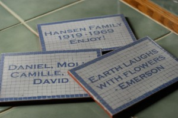

<?xml version="1.0" encoding="UTF-8"?><rss version="2.0"
	xmlns:content="http://purl.org/rss/1.0/modules/content/"
	xmlns:wfw="http://wellformedweb.org/CommentAPI/"
	xmlns:dc="http://purl.org/dc/elements/1.1/"
	xmlns:atom="http://www.w3.org/2005/Atom"
	xmlns:sy="http://purl.org/rss/1.0/modules/syndication/"
	xmlns:slash="http://purl.org/rss/1.0/modules/slash/"
	>

<channel>
	<title>Design &#8211; Friends of Ballard Corners Park</title>
	<atom:link href="http://ballardcornerspark.org/ballardcornerspark/category/design/feed/" rel="self" type="application/rss+xml" />
	<link>http://ballardcornerspark.org/ballardcornerspark</link>
	<description>Just another WordPress weblog</description>
	<lastBuildDate>Tue, 12 Apr 2016 16:55:53 +0000</lastBuildDate>
	<language>en-US</language>
	<sy:updatePeriod>hourly</sy:updatePeriod>
	<sy:updateFrequency>1</sy:updateFrequency>
	<generator>https://wordpress.org/?v=4.7.2</generator>
	<item>
		<title>Highlighting the Park</title>
		<link>http://ballardcornerspark.org/ballardcornerspark/2011/06/highlighting-the-park/</link>
		<pubDate>Fri, 03 Jun 2011 02:07:24 +0000</pubDate>
		<dc:creator><![CDATA[David Folweiler]]></dc:creator>
				<category><![CDATA[Design]]></category>
		<category><![CDATA[Meetings]]></category>
		<category><![CDATA[News]]></category>

		<guid isPermaLink="false">http://ballardcornerspark.org/ballardcornerspark/?p=1285</guid>
		<description><![CDATA[I went to a City Council committee meeting today.  They highlight a park each month and this month it was our turn.  You can watch the meeting on the Seattle Channel. My presentation is at about 2:15. Seattle Channel Video can be played in Flash Player 9 and up]]></description>
				<content:encoded><![CDATA[<p>I went to a City Council committee meeting today.  They highlight a park each month and this month it was our turn.  You can watch the meeting on the Seattle Channel.</p>
<p>My presentation is at about 2:15.</p>
<p><object id="scPlayer" classid="clsid:d27cdb6e-ae6d-11cf-96b8-444553540000" width="480" height="380" codebase="http://download.macromedia.com/pub/shockwave/cabs/flash/swflash.cab#version=6,0,40,0"><param name="name" value="scPlayer" /><param name="src" value="http://www.seattlechannel.org/videos/player5.swf?config=http://www.seattlechannel.org/videos/videoConfig.asp?ID=2051141&amp;plugins=http://www.seattlechannel.org/videos/swfobject/gapro.swf&amp;gapro.accountid=UA-22358727-1" /><param name="allowfullscreen" value="true" /><param name="allowscriptaccess" value="always" /><embed id="scPlayer" type="application/x-shockwave-flash" width="480" height="380" src="http://www.seattlechannel.org/videos/player5.swf?config=http://www.seattlechannel.org/videos/videoConfig.asp?ID=2051141&amp;plugins=http://www.seattlechannel.org/videos/swfobject/gapro.swf&amp;gapro.accountid=UA-22358727-1" allowscriptaccess="always" allowfullscreen="true" name="scPlayer"></embed></object></p>
<div style="font-family:arial,verdana;font-size:smaller;"><a href="http://www.seattlechannel.org">Seattle Channel Video</a> can be played in <strong><a href="http://www.adobe.com/go/getflashplayer">Flash Player 9 and up</a></strong></div>
]]></content:encoded>
			</item>
		<item>
		<title>Our concrete wins an award!</title>
		<link>http://ballardcornerspark.org/ballardcornerspark/2011/05/our-concrete-wins-an-award/</link>
		<pubDate>Wed, 18 May 2011 05:21:19 +0000</pubDate>
		<dc:creator><![CDATA[David Folweiler]]></dc:creator>
				<category><![CDATA[Current State]]></category>
		<category><![CDATA[Design]]></category>

		<guid isPermaLink="false">http://ballardcornerspark.org/ballardcornerspark/?p=1283</guid>
		<description><![CDATA[I just received news that our park has won an award for the creative use of concrete. From the Daily Journal of Commerce: &#8220;Ballard Corners Park was built on the site of a former corner store. The design was intended to recall local history through artful details, unique concrete forms and interpretive elements. &#8220;The park [&#8230;]]]></description>
				<content:encoded><![CDATA[<p>I just received news that our park has won <a title="Concrete Award" href="http://www.djc.com/special/concrete2011/awards.html?frmurl=award10.html" target="_blank">an award for the creative use of concrete</a>.</p>
<p></p>
<p>From the Daily Journal of Commerce:</p>
<p>&#8220;Ballard Corners Park was built on the site of a former corner store. The  design was intended to recall local history through artful details,  unique concrete forms and interpretive elements.</p>
<p>&#8220;The park has a life-size concrete corner store entry where tiles and  interpretive panels were incorporated into the tabletops and columns.  The material also allowed for smooth transitions and soft details in the  living room furniture. Color brings added warmth and character to each  of these features.</p>
<p>&#8220;The use of concrete at both the entry and the living room allowed  designers to mix organic and formal shapes while maintaining consistency  across the small space.</p>
<p>&#8220;Ready-mix concrete offered the project team the flexibility to create  unique and playful forms, and provided the durability to hold up to  public use and Seattle Parks maintenance practices. In addition, the  material offered an economical way to bring diverse shapes and character  to a small neighborhood park.&#8221;</p>
<p>The park designer John Barker tells me that will be a plaque given to us&#8230;I don&#8217;t know where we&#8217;ll put it.</p>
]]></content:encoded>
			</item>
		<item>
		<title>Nathan Arnold, artist with a dark and whimsical sense of humor</title>
		<link>http://ballardcornerspark.org/ballardcornerspark/2009/10/nathan-arnold-artist-with-a-dark-and-whimsical-sense-of-humor/</link>
		<pubDate>Thu, 15 Oct 2009 07:00:27 +0000</pubDate>
		<dc:creator><![CDATA[David Folweiler]]></dc:creator>
				<category><![CDATA[Design]]></category>

		<guid isPermaLink="false">http://ballardcornerspark.org/ballardcornerspark/?p=938</guid>
		<description><![CDATA[I was impressed that Nathan Arnold, our park artist, has made it onto the cover of the Daily Journal of Commerce &#8211; well his art did with a photo I took a while ago. I was asked about him by Karen O&#8217;Connor, the PR person at Parks who did our Grand Opening.  I went to [&#8230;]]]></description>
				<content:encoded><![CDATA[<p>I was impressed that Nathan Arnold, our park artist, has made it onto the cover of the <a title="pdf of DJC front page article" href="../../../../Documents/DJC&#32;100509.pdf.html" target="_blank">Daily Journal of Commerce</a> &#8211; well his art did with a photo I took a while ago.</p>
<p><a title="pdf of DJC front page article" href="../../../../Documents/DJC&#32;100509.pdf.html" target="_blank"></a></p>
<p>I was asked about him by Karen O&#8217;Connor, the PR person at Parks who did our Grand Opening.  I went to the park to interview him.  He&#8217;s so casual and self-effacing.  I tried to ask him about his &#8220;art&#8221; background, but he mostly told me he was mason and did regular masonry things &#8211; chimneys, rock walls, and &#8220;lots of bluestone&#8221;.  He told me he went to welding school, but could never find a job.</p>
<p>So, I was trolling around the internet looking for the photo that appeared in today&#8217;s Seattle Times and found <a title="Seattle P-I article on Nathan Arnold's art" href="http://www.seattlepi.com/visualart/98450_arnold05.shtml" target="_blank">this old P-I article on him</a>.  It turns out he&#8217;s a tremendous artist and didn&#8217;t let on at all about any of it when I tried to interview him.  I&#8217;m unsure whether it speaks poorly of my interview skills or his lack of ego.</p>
<p>So, not only did he slip by me on the interview, he has a website for his art &#8211; <a title="Johnny Jet Pack" href="http://www.johnnyjetpack.com/" target="_blank">johnnyjetpack.com</a>.</p>
<p>Then I came across this video of a very magnetic Nathan Arnold.<br />
<object classid="clsid:d27cdb6e-ae6d-11cf-96b8-444553540000" width="400" height="300" codebase="http://download.macromedia.com/pub/shockwave/cabs/flash/swflash.cab#version=6,0,40,0"><param name="allowfullscreen" value="true" /><param name="allowscriptaccess" value="always" /><param name="src" value="http://vimeo.com/moogaloop.swf?clip_id=4814454&amp;server=vimeo.com&amp;show_title=1&amp;show_byline=1&amp;show_portrait=0&amp;color=&amp;fullscreen=1" /><embed type="application/x-shockwave-flash" width="400" height="300" src="http://vimeo.com/moogaloop.swf?clip_id=4814454&amp;server=vimeo.com&amp;show_title=1&amp;show_byline=1&amp;show_portrait=0&amp;color=&amp;fullscreen=1" allowscriptaccess="always" allowfullscreen="true"></embed></object></p>
<p>Did you see Johnny Jet Pack get launched at Gasworks Park?</p>
<p><object classid="clsid:d27cdb6e-ae6d-11cf-96b8-444553540000" width="425" height="344" codebase="http://download.macromedia.com/pub/shockwave/cabs/flash/swflash.cab#version=6,0,40,0"><param name="allowFullScreen" value="true" /><param name="allowscriptaccess" value="always" /><param name="src" value="http://www.youtube.com/v/lPgh4O18Tu4&amp;hl=en&amp;fs=1&amp;" /><param name="allowfullscreen" value="true" /><embed type="application/x-shockwave-flash" width="425" height="344" src="http://www.youtube.com/v/lPgh4O18Tu4&amp;hl=en&amp;fs=1&amp;" allowscriptaccess="always" allowfullscreen="true"></embed></object></p>
<p>Or how about cordless drill break dancing?</p>
<p><object classid="clsid:d27cdb6e-ae6d-11cf-96b8-444553540000" width="425" height="344" codebase="http://download.macromedia.com/pub/shockwave/cabs/flash/swflash.cab#version=6,0,40,0"><param name="allowFullScreen" value="true" /><param name="allowscriptaccess" value="always" /><param name="src" value="http://www.youtube.com/v/BaFeLX710Lk&amp;hl=en&amp;fs=1&amp;" /><param name="allowfullscreen" value="true" /><embed type="application/x-shockwave-flash" width="425" height="344" src="http://www.youtube.com/v/BaFeLX710Lk&amp;hl=en&amp;fs=1&amp;" allowscriptaccess="always" allowfullscreen="true"></embed></object></p>
<p>Or a puppet eating squirrel?</p>
<p><object classid="clsid:d27cdb6e-ae6d-11cf-96b8-444553540000" width="425" height="344" codebase="http://download.macromedia.com/pub/shockwave/cabs/flash/swflash.cab#version=6,0,40,0"><param name="allowFullScreen" value="true" /><param name="allowscriptaccess" value="always" /><param name="src" value="http://www.youtube.com/v/xGpZNCO_fiw&amp;hl=en&amp;fs=1&amp;" /><param name="allowfullscreen" value="true" /><embed type="application/x-shockwave-flash" width="425" height="344" src="http://www.youtube.com/v/xGpZNCO_fiw&amp;hl=en&amp;fs=1&amp;" allowscriptaccess="always" allowfullscreen="true"></embed></object></p>
<p>more is at <a title="Johnny Jet Pack's YouTube Channel" href="http://www.youtube.com/user/JJPLabs" target="_blank">his YouTube channel</a>.</p>
]]></content:encoded>
			</item>
		<item>
		<title>One last round of edits for the panels</title>
		<link>http://ballardcornerspark.org/ballardcornerspark/2009/10/one-last-round-of-edits-for-the-panels/</link>
		<comments>http://ballardcornerspark.org/ballardcornerspark/2009/10/one-last-round-of-edits-for-the-panels/#comments</comments>
		<pubDate>Mon, 05 Oct 2009 22:21:26 +0000</pubDate>
		<dc:creator><![CDATA[David Folweiler]]></dc:creator>
				<category><![CDATA[Design]]></category>

		<guid isPermaLink="false">http://ballardcornerspark.org/ballardcornerspark/?p=834</guid>
		<description><![CDATA[OK, folks.  I hope that this is the last round of edits.  After this, the panels are going to be put to bed. Corner Store countertop Site history countertop vertical panel 1 vertical panel 2 As before, please add a comment below.  You might want to check the previous comments to see if your comment [&#8230;]]]></description>
				<content:encoded><![CDATA[<p>OK, folks.  I hope that this is the last round of edits.  After this, the panels are going to be put to bed.</p>
<p><a href="../../../../Documents/panels&#32;10&#32;5&#32;09/CornerStoresPanel&#32;100509.pdf" target="_blank">Corner Store countertop</a></p>
<p><a href="../../../../Documents/panels&#32;10&#32;5&#32;09/ParkHistoryPanel&#32;100509.pdf">Site history countertop</a></p>
<p><a href="../../../../Documents/panels&#32;10&#32;5&#32;09/LongPanel1&#32;100509.pdf" target="_blank">vertical panel 1</a></p>
<p><a href="../../../../Documents/panels&#32;10&#32;5&#32;09/LongPanel2&#32;100509.pdf">vertical panel 2</a></p>
<p>As before, please add a comment below.  You might want to check the previous comments to see if your comment has already been addressed.  Then you can add your unique feedback.</p>
]]></content:encoded>
			<wfw:commentRss>http://ballardcornerspark.org/ballardcornerspark/2009/10/one-last-round-of-edits-for-the-panels/feed/</wfw:commentRss>
		<slash:comments>6</slash:comments>
		</item>
		<item>
		<title>Latest countertop and column designs</title>
		<link>http://ballardcornerspark.org/ballardcornerspark/2009/09/latest-countertop-and-column-designs/</link>
		<comments>http://ballardcornerspark.org/ballardcornerspark/2009/09/latest-countertop-and-column-designs/#comments</comments>
		<pubDate>Wed, 30 Sep 2009 16:23:18 +0000</pubDate>
		<dc:creator><![CDATA[David Folweiler]]></dc:creator>
				<category><![CDATA[construction]]></category>
		<category><![CDATA[Design]]></category>

		<guid isPermaLink="false">http://ballardcornerspark.org/ballardcornerspark/?p=822</guid>
		<description><![CDATA[Here are the latest designs for the countertops and column panels.  Please add comments below about how they can be improved.  We&#8217;re hoping to get our final edits in soon, so the panels can go into production.  There is an approximately six week turn-around. Park History Panel Corner Store History Panel column panel 1 column [&#8230;]]]></description>
				<content:encoded><![CDATA[<p>Here are the latest designs for the countertops and column panels.  Please add comments below about how they can be improved.  We&#8217;re hoping to get our final edits in soon, so the panels can go into production.  There is an approximately six week turn-around.</p>
<p><a title="Park History Panel" href="../../../../Documents/ParkHistoryPanel&#32;92909.pdf.html" target="_blank">Park History Panel</a></p>
<p><a title="Corner Store Histories" href="../../../../Documents/CornerStoresPanel&#32;92909.pdf.html" target="_blank">Corner Store History Panel</a></p>
<p><a title="Vertical Panel 1" href="../../../../Documents/LongPanel1&#32;92909.pdf.html" target="_blank">column panel 1</a></p>
<p><a title="Vertical Panel 2" href="../../../../Documents/LongPanel2&#32;92909.pdf.html" target="_blank">column panel 2</a></p>
]]></content:encoded>
			<wfw:commentRss>http://ballardcornerspark.org/ballardcornerspark/2009/09/latest-countertop-and-column-designs/feed/</wfw:commentRss>
		<slash:comments>7</slash:comments>
		</item>
		<item>
		<title>Grand Opening Flyer</title>
		<link>http://ballardcornerspark.org/ballardcornerspark/2009/09/grand-opening-flyer/</link>
		<pubDate>Wed, 23 Sep 2009 21:02:52 +0000</pubDate>
		<dc:creator><![CDATA[David Folweiler]]></dc:creator>
				<category><![CDATA[Design]]></category>
		<category><![CDATA[Events]]></category>

		<guid isPermaLink="false">http://ballardcornerspark.org/ballardcornerspark/?p=813</guid>
		<description><![CDATA[Here&#8217;s the brand spanking new Grand Opening Brochure created by Matthew Wenz of Barker Landscape Architects.]]></description>
				<content:encoded><![CDATA[<p>Here&#8217;s the brand spanking new <a title="Ground Opening Flyer" href="../../../../Documents/BCGrandOpening092309.pdf" target="_blank">Grand Opening Brochure</a> created by Matthew Wenz of Barker Landscape Architects.</p>
]]></content:encoded>
			</item>
		<item>
		<title>The Tiles Are Here!</title>
		<link>http://ballardcornerspark.org/ballardcornerspark/2009/09/the-tiles-are-here/</link>
		<pubDate>Tue, 22 Sep 2009 06:37:05 +0000</pubDate>
		<dc:creator><![CDATA[David Folweiler]]></dc:creator>
				<category><![CDATA[construction]]></category>
		<category><![CDATA[Design]]></category>

		<guid isPermaLink="false">http://ballardcornerspark.org/ballardcornerspark/?p=808</guid>
		<description><![CDATA[How pleased am I?!  Mark let me know that the donor tiles are done.  They are striking.  Check out a few samples: click to enlarge.]]></description>
				<content:encoded><![CDATA[<p>How pleased am I?!  Mark let me know that the donor tiles are done.  They are striking.  Check out a few samples:</p>
<p><a href="../../../wp-content/uploads/2009/09/bcp-tile2.jpg"></a></p>
<p>click to enlarge.</p>
]]></content:encoded>
			</item>
		<item>
		<title>New Interpretive Signs</title>
		<link>http://ballardcornerspark.org/ballardcornerspark/2009/09/new-interpretive-signs/</link>
		<pubDate>Wed, 09 Sep 2009 23:12:05 +0000</pubDate>
		<dc:creator><![CDATA[David Folweiler]]></dc:creator>
				<category><![CDATA[Design]]></category>

		<guid isPermaLink="false">http://ballardcornerspark.org/ballardcornerspark/?p=788</guid>
		<description><![CDATA[These are works in progress, but here are the preliminary forms of the interpretive signs.  Please comment below.  Georgia Selfridge from the Ballard Historical Society helped with the images and information for the captions. vertical panel 1 vertical panel 2 site history countertop corner store history countertop]]></description>
				<content:encoded><![CDATA[<p>These are works in progress, but here are the preliminary forms of the interpretive signs.  Please comment below.  Georgia Selfridge from the <a title="Ballard Historical Society" href="http://www.ballardhistory.org/" target="_blank">Ballard Historical Society</a> helped with the images and information for the captions.</p>
<p><a href="http://www.ballardcornerspark.org/Documents/interpretive_signs/LongPanel1%2090809.pdf" target="_blank">vertical panel 1</a><br />
<a href="http://www.ballardcornerspark.org/Documents/interpretive_signs/LongPanel2%2090809.pdf" target="_blank">vertical panel 2</a><br />
<a href="http://www.ballardcornerspark.org/Documents/interpretive_signs/ParkHistoryPanel%2090809.pdf" target="_blank">site history countertop</a><br />
<a href="http://www.ballardcornerspark.org/Documents/interpretive_signs/CornerStoresPanel%2090809.pdf" target="_blank">corner store history countertop</a></p>
]]></content:encoded>
			</item>
		<item>
		<title>Steering Committee Meeting</title>
		<link>http://ballardcornerspark.org/ballardcornerspark/2009/07/steering-committee-meeting-2/</link>
		<pubDate>Thu, 09 Jul 2009 00:57:32 +0000</pubDate>
		<dc:creator><![CDATA[David Folweiler]]></dc:creator>
				<category><![CDATA[construction]]></category>
		<category><![CDATA[Design]]></category>
		<category><![CDATA[Meetings]]></category>

		<guid isPermaLink="false">http://ballardcornerspark.org/ballardcornerspark/?p=738</guid>
		<description><![CDATA[In what may have been the very last steering committee meeting, Barker presented the corner store design and we hashed out some details with Nathan Arnold, the contractor.]]></description>
				<content:encoded><![CDATA[<p>In what may have been the very last steering committee meeting, Barker presented the corner store design and we hashed out some details with Nathan Arnold, the contractor.</p>

]]></content:encoded>
			</item>
		<item>
		<title>Phase III design documents and cost estimate</title>
		<link>http://ballardcornerspark.org/ballardcornerspark/2009/07/phase-iii-design-documents-and-cost-estimate/</link>
		<comments>http://ballardcornerspark.org/ballardcornerspark/2009/07/phase-iii-design-documents-and-cost-estimate/#comments</comments>
		<pubDate>Wed, 01 Jul 2009 22:42:21 +0000</pubDate>
		<dc:creator><![CDATA[David Folweiler]]></dc:creator>
				<category><![CDATA[construction]]></category>
		<category><![CDATA[Design]]></category>

		<guid isPermaLink="false">http://ballardcornerspark.org/ballardcornerspark/?p=729</guid>
		<description><![CDATA[From Barker, here are some documents for the design and construction of Phase 3 &#8211; to include the corner store and: • Another bench in the south raingarden • More trees (near benches and behind the furniture) and plantings • Lawn restoration • Sealing the foundation walls to protect against graffiti • Fill in the [&#8230;]]]></description>
				<content:encoded><![CDATA[<p>From Barker, here are some documents for the design and construction of Phase 3 &#8211; to include the corner store and:<br />
•	Another bench in the south raingarden<br />
•	More trees (near benches and behind the furniture) and plantings<br />
•	Lawn restoration<br />
•	Sealing the foundation walls to protect against graffiti<br />
•	Fill in the gap between the sidewalk and the pad for the bench in the north raingarden</p>
<p><a href="../../../wp-content/uploads/2009/07/cost-estimate-phase-3-revised-10-jul-09.pdf.html">cost estimate phase 3 revised 10 jul 09</a></p>
<p><a href="../../../wp-content/uploads/2009/07/details-entry-63009.pdf.html">corner store design</a></p>
<p><a href="../../../wp-content/uploads/2009/07/counter-options-63009.pdf.html">counter options</a></p>
]]></content:encoded>
			<wfw:commentRss>http://ballardcornerspark.org/ballardcornerspark/2009/07/phase-iii-design-documents-and-cost-estimate/feed/</wfw:commentRss>
		<slash:comments>3</slash:comments>
		</item>
	</channel>
</rss>
